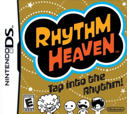
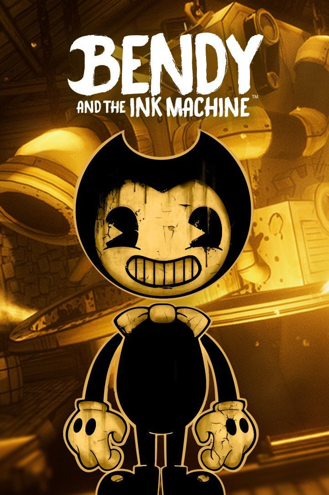

Best Games
Go back
I've played on the DS a lot- one of my go-to games being Rhythm heaven.

Indie horror games have also always drawn my attention. Bendy and the Ink Machine is my all time favorite.

Go to top